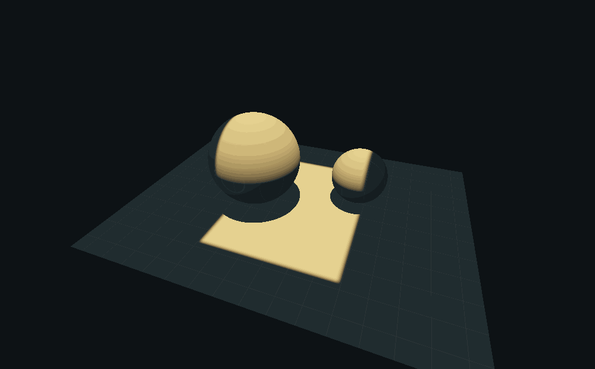
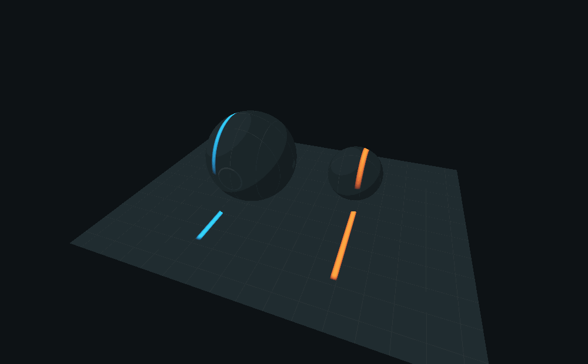
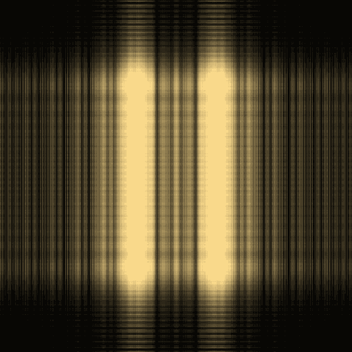
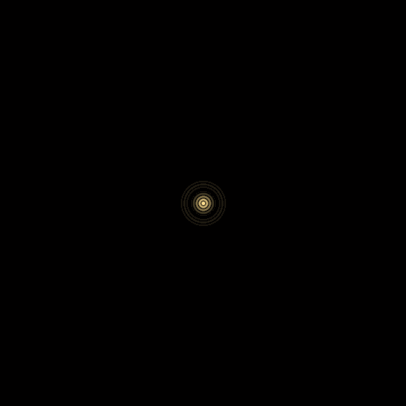

Open View → Optics & primitive laboratory in the rebuilt native viewer. The original surface-edge and wave experiments described below are independent of the scene integrator. Each can export its images and settings; wave export includes the complex field as CSV. The window now also contains Support intersections & time and Volume estimators. See the current extension guide for those two laboratories, the separate actual-scene light-translation window, and native PP33 surface transport.
Surface and differential primitives
The first experiment evaluates a collimated quad emitter on three-dimensional receivers: a floor and two spheres. The swept emitter occupies a volume; its intersection with a receiver occupies a patch. Selecting Thin sheet collapses one emitter coordinate to a finite-width band, leaving curves on the receivers. Receiver intersection, shadowing by the spheres and the projected-flux cosine are computed. This is an actual controlled direct-light rendering experiment, not a projected illustration pasted over an unrelated scene.
 
For a translated interval, write its footprint as
A(x; X) = H_b(x-X+a) - H_b(x-X-a).
dA/dX = -H'_b(x-X+a) + H'_b(x-X-a).
Here H_b is the declared smooth edge kernel. The negative band leaves the old
footprint; the positive band enters the new one. No automatic differentiation
is needed for this parameter. Analytic edge derivative, Central finite
difference, and Derivative residual use the same kernel. Reduce the finite
difference step to compare them without conflating discretization with a change
of target integral.
As the edge kernel shrinks, the boundary derivative approaches a distribution. It does not become an ordinary bounded pointwise derivative at a sharp edge. Likewise the sheet option is still a finite band, not an unbiased estimator of an infinitely thin emitter with its own measure conversion.
This is the useful first test of the proposed boundary primitive. Extending it to a moving quad in a general caustic path requires the smooth throughput derivative, motion of visibility boundaries, and appropriate sampling weights. Ordinary autodiff through a ray tracer does not automatically supply those discontinuity terms. Mitsuba's projective sampling documentation describes separate treatment of visibility derivatives.
This original controlled footprint experiment does not replace the existing finite-radius surface photon map or claim complete surface-caustic transport. A reusable receiver texture atlas remains a follow-up. The later native PP33 receiver-curve route separately traces actual triangle receivers and selected specular chains; it is not this footprint experiment being silently promoted to a general integrator.
Coherent wave propagation
The second experiment propagates a complex aperture field with a two-dimensional FFT. Angular-spectrum propagation decomposes the field into plane waves, advances their phases and recombines them. Intensities are computed after this sum. The separate Fraunhofer mode shows the far-field approximation and updates the physical sensor scale. See TU Delft's wavefield propagation notes.
Try two slits, then vary the relative phase: fringes shift even though each slit's transmitted power stays fixed. Single slits, a five-slit grating, a disc, an annulus and a phase disc supply other controlled tests. Aperture and propagated phase are shown beside intensity and its central cross-section.
 
The units are explicit: wavelength in nanometers, aperture dimensions in micrometers and travel in centimeters. The power readout accounts for the different physical pixel area in the far field. Display images normalize for visibility; exported complex amplitudes are not normalized this way.
Each aperture reports its actual slit width/spacing or inner/outer diameter. Slit controls preserve a sampled gap. Detector display zoom enlarges the central interference pattern without changing its propagation: the visible physical width and cross-section follow the crop, while exports retain the full field. Far-field mode starts at 10 m and reports the Fresnel number so an invalid short-distance approximation is visible.
This is scalar, monochromatic propagation in homogeneous free space on a finite periodic grid. It does not include polarization, material interfaces or arbitrary multiple scattering. Increasing the window or changing its sampling is needed when propagation wraps energy around its boundaries. It is a real diffraction module, but is not a switch that turns the ten radiance integrators into coherent wave transport. Spectral radiance and complex amplitude are different state variables; see the PBRT discussion of radiometry's geometric-optics assumptions.
Native validation
PrismResearchTest compares the FFT to an independent direct DFT, checks inverse
recovery, uniform plane waves, propagation power, physical far-field pixel area,
double-slit destructive interference, finite-difference convergence and receiver
shadowing. Its optional output directory renders the figures on this page using
the same native experiment code. The workbench caches its images when controls
are unchanged, rather than running these computations every frame.